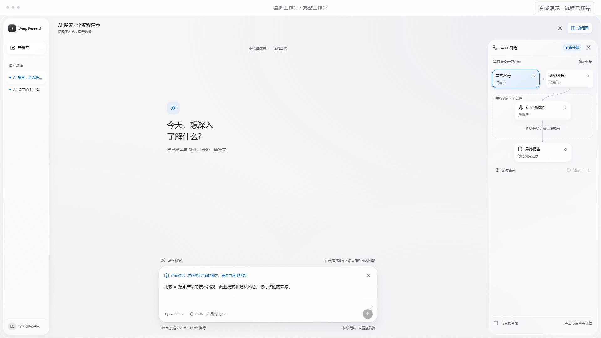
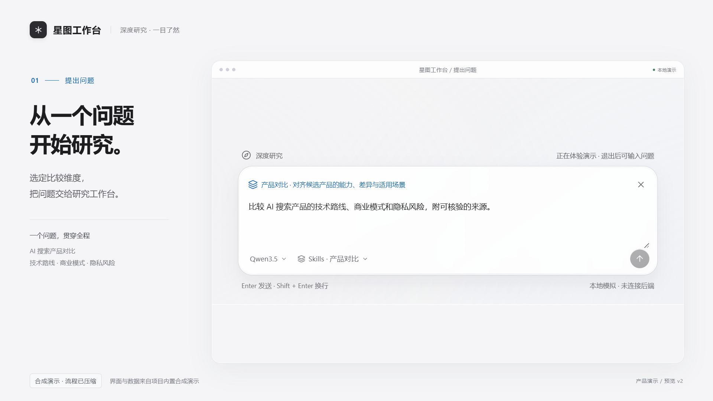
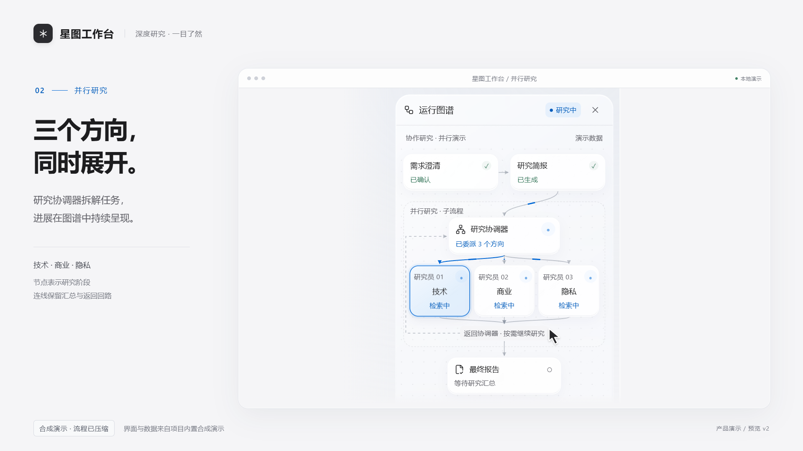
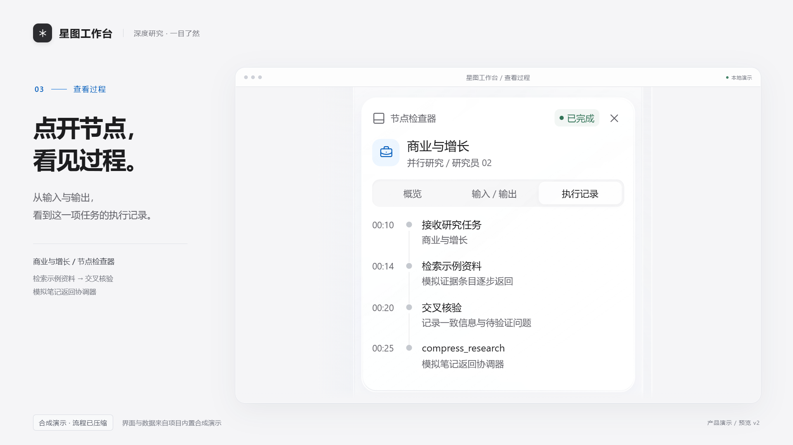
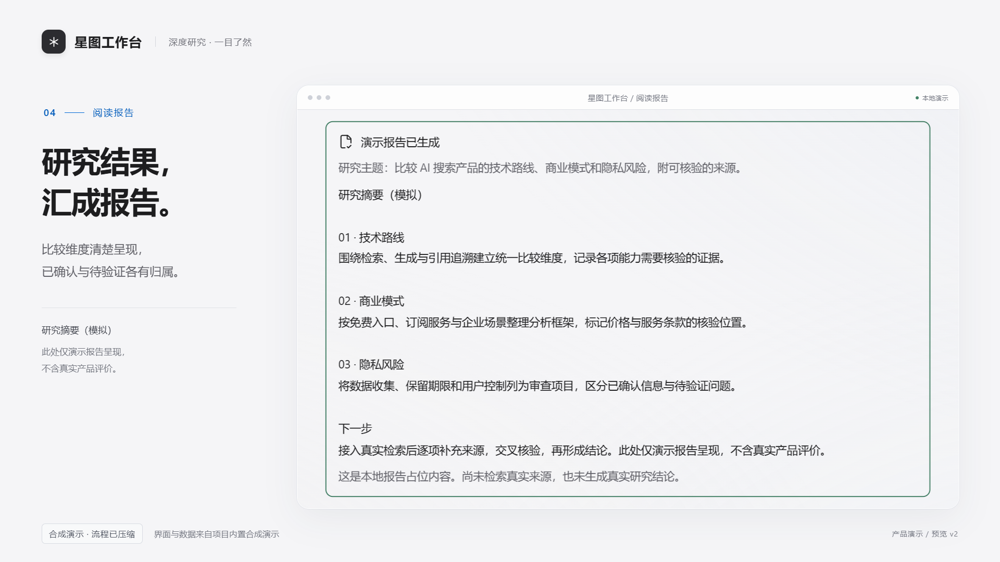
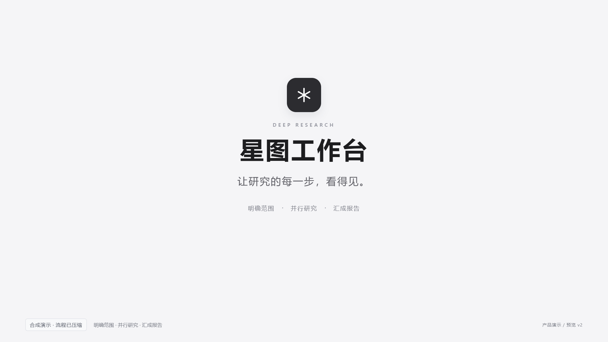

全屏完整工作台 1 秒 → 平滑聚焦 1 秒 → 输入框停留 1 秒，再进入并行研究。12 秒总时长，报告与品牌的停留时间不变。
正在准备播放…
下方为第 0–239 帧的 8 秒无声动效小样，包含新增开场、图谱运行、节点交互及运行结束。
完整交互分镜 / 逐帧检查 · 分镜总览 · 检查记录

0.5 秒 · 第 15 帧 · 01 / 完整工作台
2.5 秒 · 第 75 帧 · 02 / 聚焦输入框
4.5 秒 · 第 135 帧 · 03 / 并行研究
6.5 秒 · 第 195 帧 · 04 / 执行记录
8.5 秒 · 第 255 帧 · 05 / 阅读报告
11.5 秒 · 第 345 帧 · 06 / 品牌收尾